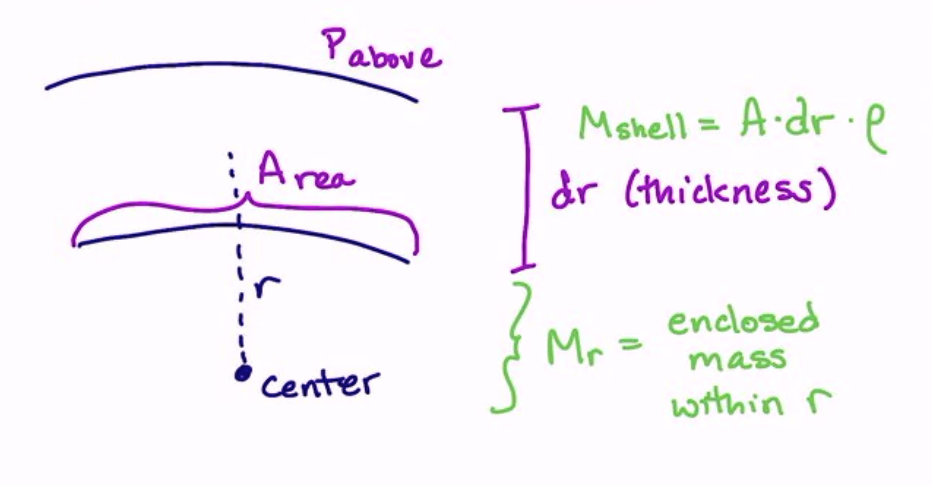
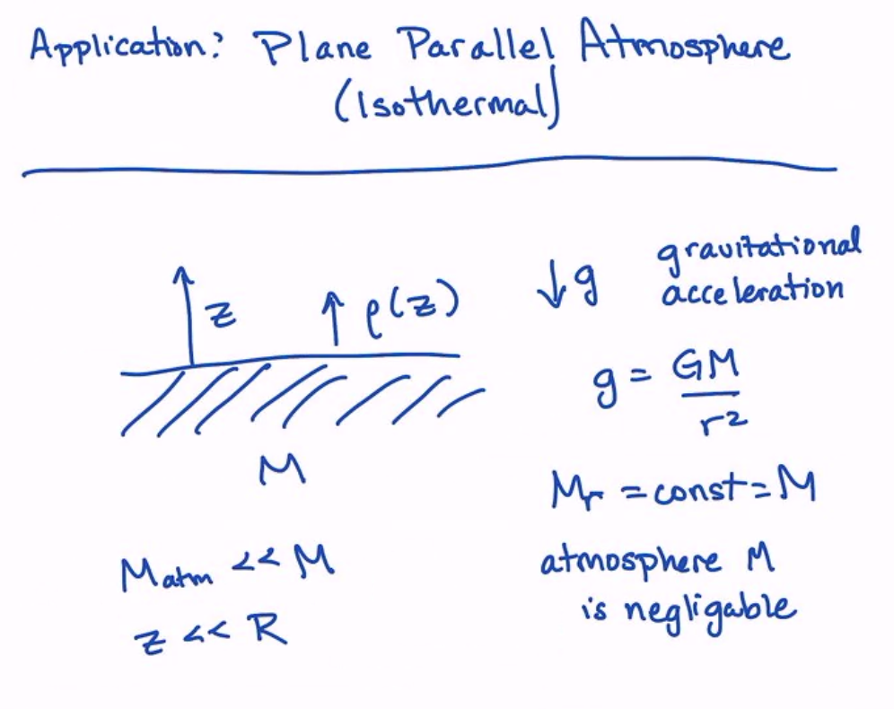

Hydrostatic Equilibrium: A Deep Dive
Contents
Hydrostatic Equilibrium: A Deep Dive¶
Force Balance¶
{kind=link}
Let us consider a little patch of the surface of the star as a section of a shell. We have an above and below pressure, and an area + thinkness of the patch \(dA\) and \(dr\). In this thickness, we have some mass \(M_{shell} = A \cdot dr \cdot \rho\), and we have the enclosed mass within the shell at radius \(r\).
We then have our force equation:
We can substitute in the pressure equation, giving:
Simplifying, we have:
Or, sometimes, we see:
We will use hydrostatic equilibrium so often, that we will abbreviate it as \(\langle HE \rangle\), and this means that \(\vec{a} = 0\).
Doing this, we get, at every radius:
And also recall our continuity of mass equation:
An Application of Hydrostatic Equilibrium: Plane Parallel Atmosphere (Isothermal)¶
Here is the setup of our example: we have something with a surface, gravity, an atmosphere, and a negligible atmospheric mass.
{kind=link}
Let’s start with writing the equation of hydrostatic equilibrium for this system \(\langle HE \rangle\). We start with:
We immediately convert from \(r\) to \(z\) on the left. On the rightside, we have gravity, which we have defined as \(g \equiv -GM/r^2\).
where we have assumed that we have an ideal gas: \(P = nkT\). If we also assume that the atmosphere is a single atom or molecule, we have:
If we have a multi-component atmosphere, \(m\) is the mean mass per particle. If we make both of these assumptions, we have:
Solving this, we get:
and we call \(h\) the scale height of the atmosphere and \(n_0\) is thje density at \(z=0\).
The Solar Surface¶
The scale height of the sun is \(h \sim 2 \times 10^{7}\) cm and the temperature is \(T\sim 5800\) K. At the surface, the atmosphere is so thin that properties behave strangely and rapidly with radius. This is because the surface is the boundary from optically thick to optically thin. Thus at the surface, we go from very gradual pressure, temperature, and density changes (with radius) to rapid changes with radius.
Mixed Gas Case¶
One of the assumptions above is that we have a single type of atom. If we have a mixed gas, we define the mean molecular weight per particle.
For a fully ionized gas, we have the pressure contribution from the ions:
where
where
\(A_i\) is the atomic mass number (for example helium is A=4)
\(x_i\) is the mass fraction
\(m_p\) is the proton mass
We can also impose charge neutrality, and we have:
where
\(Z_i\) is the number of protons per electron in an atom
In this mixed gas, we need the total pressure:
where
is the mean molecular weight in ions. We also have the electron pressure:
where
All of this gives:
where
For a fully ionized plasma,
For ionized hydrogen, \(\mu = 1/2\), but for hydrogen and helium in cosmic abundance, we have \(\mu = 0.62\). This changes the structure and radii big time of our stars around us! Microphysics has a huge macro-impact.